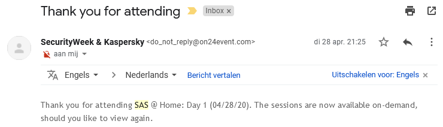
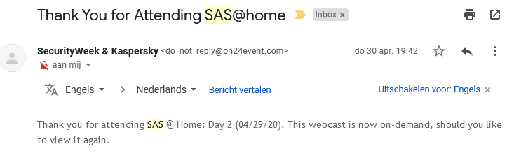

Security Analyst Summit @ Home
Date and duration:
28 April - 30 April 2020
17:00 - 20:00; 17:00 - 19:15; 17:00 - 19:25
Joined days/times:
28 April 17:00 - 19:45
29 April 17:00 - 18:00 & 18:30 - 19:15
Proof:

Description
De Security Analyst Summit is normaal een 3-daags event dat ergens in de wereld plaatsvind. Door de Covid-19 crisis kon dit echter niet door gaan. Daarom werd er de beslissing gehouden om dit nu online te doen. Door stage en omstandingheden heb ik niet alle 3 dagen volledig kunnen volgen. De dinsdag begon met een intro en dan direct naar de talk Hiding in Plain Sight: PlantomLance Comes to play. Dit ging over spyware in de Google Play store. Vervolgens kwam Thomas Rid die sprak over operation Neptun. Dit was een disinformatie campagne uit de 2de wereldoorlog. Vervolgens was het over een zero-day in een recente versie van Chrome, een bespreking over Cyber Security in een post-Covid wereld.
Dag 2 begon met een talk over Yara rules. Na dit moest ik echter weg voor een andere event. Om af te sluiten kwam ik wel nog terug voor de talk History of Hackers: How Hackers Changed Everything. Dit was een heel interessant event om bij te wonen en ik zal zeker kijken of ik volgende jaren dit fysiek kan bijwonen.